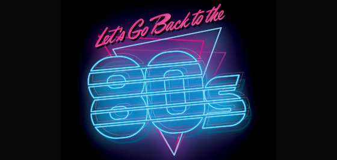
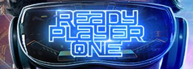

A Critique of Retro Gaming or Shut up and play something in colour.

Nerds like to reference things. When I was a kid, we would desperately try to work lines from Movies into conversations. The moment we got it out of our lips we would grin like idiots and look around seeing it anyone noticed. They always did.
Then, when I became an adult I did not, like my ancestors ‘put away childish things’ instead, I revelled in them. It’s an odd thing, the reverence of the past. I’m not sure it’s entirely healthy either.
I’m 39 years old as I write this and I have been casually obsessed with 80’s and 90’s media since, the 80’s and 90’s. I used to think that people loved the 80’s because it was a retro fix and nothing more.
It’s normal for any generation of people to enjoy the music, Movies and of their youth. Usually, when they hit their 50’s (ish) they get a little reluctant to experience new things and then bed down in the things that were cool when they were in their younger years. It’s not healthy but it is normal. Most people know that a fish has to keep swimming forward so it doesn’t die. People are basically just big land fish, and we have to emotionally swim to stay alive. Anyway, I digress.
The 80’s has proven to be oddly more attractive than simply being in the past like anyone else’s youth. It’s been embraced by people who weren’t born until it was long gone. I have satirically argued that culture peaked in the 80’s and has been getting shittier ever since. Thing is, the more I think about it the more it seems like it maybe an empirical fact.
I know, people reading this are now thinking that I’m being grumpy and old about it and am literally doing the aforementioned bedding into my past. But I’m honestly not. I’m a socially active person, I watch new things, play new games and I an constantly hungry for new ideas. I don’t feel like I’m slowing down or curling back into the 80’s but culture as a whole does seem to be obsessed with its own past. I have a few theories about this later in this post.
I should also take a moment to talk about nostalgia vs references. Most humans are nostalgic and quote movies they love, because they love them and the movies are in their brains. They like things that remind them of the comic books and games they play because they love them. The nostalgic leaks that they allow themselves to indulge in are referential as a side effect. Also, you may notice that it’s the classical Geek types that do this the most. Well, the reality is (and I speak from experience) the geeky kids watched these movies more than most because they had little else do to in a pre-internet world.
Here are my thoughts, in no specific order…
The Disney take over
At some point, Disney started expanding their empire. The result is that they control everything “big” we see and hear. Even if they didn’t make it, they set the gold standard in quality and cinematic style. To make a high quality Movie is to make a Disney Movie.
It’s both impressive and deeply worrying that you could watch only Disney Movies for ever and pretty much see every film that matters to the general populous. This also means that Disney are in the unique position of being able to reference and pull from their own ideas while slapping everyone else with a DMCA. It’s a pretty impressive scam really.
The Ernest Cline Method

Good old Ernest. An average writer that elevated his work via Referencing better things. The basic method was this,
- Write an average story
- Pack it with Nostalgic/retro obsessed characters
- Via described visuals and character dialogue pack it to the brim with 80’s references that appear to make sense within the story
The reality is that simply saying a things name is not a warm loving reference. To say ‘knight rider’ is not a reference to ‘Knight Rider.’ To have a character drive a black Trans-am is not a reference. But, Having the Character Drive a Black Trans-am. One that he drives because he loves Knight Rider is a reference to Knight Rider. Mr Cline nailed this about 40% of the time during his book Ready Player One. He loved these things and it showed in the work. A work that without this would have been terrible. When Stephen “Over Rated” Spielberg made his Movie of the same work no-one on the production seemed to care much about the stuff in the Movie. Because of this it was less referential and more a ‘say the name of a thing and move on’ kind of Movie.
Retro games

Now I have purged myself of that little rant. We get on to the meat of the conversation (it all ties in. At least, I think its does)
This is a controversial topic, I know. But, I assure you I too like to play older games. I’m a big fan of them actually.
There are two ways to play retro games. The first is the one I find the least tasteful. It is when someone only enjoys older games (they play lots of things but only enjoy old games) I can see the appeal of the 16bits. I enjoy an 8bits from time to time. A lot are genuinely fun but you literally can not claim that “old games are better” its not true. Even if you really like excite bike (and I do) you can in no way argue that it’s a better game than Mario Kart switch, Deus Ex, or dark Souls. You may prefer it. But it is not ‘better’ in any way that matters.
The other way of playing Retro Games is to simply enjoy lots of different games. I play loads of things. I play new games, old games. Some old games I have never played before. I enjoy lots of things and I enjoy them for what they are. I like mechanics and I like pixel-art visuals. But, I don’t think I like pixel art because its ‘retro’ I like pixel art because its to my tastes. I also really like the way Destiny 2 looks even though I haven’t played it. I recently enjoyed ‘Risk of Rain 2’ a great deal and there are no Pixels there. Overwatch is one of my favourite multi player games ever and its pretty darn modern looking. All this said, when the NES gaming service came to the Switch (NES-Flix) I played a crap load of Mario Golf (because its a great golf game) and City Connection ended up being a favourite of mine too. I had never played City Connection until it arrived on the service. The tight but simple controls hooked me from the moment I figured out what I was meant to accomplish.
Old shit - New shit - Swimming
With all this in mind I worry that we are obsessed with older stuff because in the modern day we are given a torrent of monetization nonsense, Franchise awareness, Brand building and worst of all unwanted follow-ups to things we loved as a kid.
I really think that the major reason people are so reverent of the previous decades is that you could enjoy a thing and not be beaten around the face by its merchandise, its follow ups and its fucking Micro Transactions.
I can play Excite bike and not have to but the new tracks. I can watch Ferris Bueller and not have to see the one movie an year and Super-bowel ad. The comparative purity of the past is attractive but that should not blind us to the great stuff we are surrounded by.
I think gamers get hit buy this worse. You can ignore new movies and music and no one seems to notice but gamers tend to live in the now. when you dont know what and ‘Untitled Goose Game’ is people raise an eyebrow. When you have never played Fortnight people wonder why.
Try things, try everything. Don’t get intimidated by the wall of modernism that you are faced with. Push past the meme culture. Im pretty sure there are lots of new things you would love.
Preaching to my me
The honest truth here is. That I generally speaking don’t enjoy Movies. Not just new ones. But Movies in general. Mostly I think that a 2 hour story is usually a bad one. I prefer long for story telling and you know… comic books!
Because I allowed myself to get into a mindset where ‘I do not like movies’ I have been missing things that I would love. Not liking movies was beginning to be a mantra that was blinding me to new things.
I was deciding I hated them out of habit. Oddly, it was watching something VERY new and VERY modern that broke me out of this habit.
I watched Spider-man: Into the Spider-Verse and it was so good it broke down my barrier. It was striking and perfect and filled to the brim with joy. So much that my cynicism was not strong enough to push through it. Over the next couple of days I realised there was a lot of things that I had hated because of pre-conception and now I’m working on myself to sift through whats actually shite and what I made myself hate because of an idea.
I worry that Lots of people do the game with ‘new’ games and I don’t want to stop swimming.
Hex.